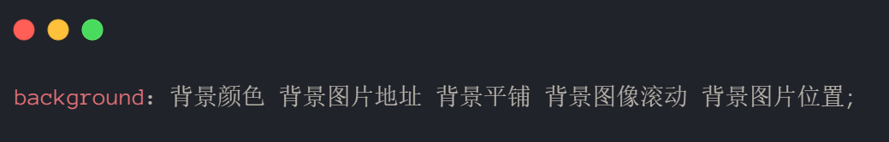

背景属性可以设置（背景图像固定）等...
本页面目录：
background-attachment 属性设置背景图像是否固定或者随着页面的其余部分滚动
background-attachment 后期可以制作视差滚动的效果
| 参数值 | 作用 |
|---|---|
| scroll | 背景图像是随对象内容滚动 |
| fixed | 背景图像固定 |
为了简化背景属性的代码，我们可以将这些属性合并简写在同一属性background中，从而节约代码量
background：背景颜色 背景图片地址 背景平铺 背景图像滚动 背景图片位置;
这是实际开发中，我们更提倡的写法
CSS为我们提供了背景颜色半透明效果:🌈
| 属性 | 作用 | 值 |
|---|---|---|
| background-color | 背景颜色 | 预定义的颜色值/十六进制/RGB代码 |
| background-image | 背景图片 | url(图片路径) |
| background-repeat | 是否平铺 | repeat/no-repeat/repeat-x/repeat-y |
| background-position | 背景位置 | length/position 分别是 x 和 y 坐标 |
| background-attachment | 背景附着 | scroll（背景滚动）/fixed（背景固定） |
| 背景简写 | 书写更简单 | 背景颜色 背景图片地址 背景平铺 背景滚动 背景位置; |
| 背景色半透明 | 背景颜色半透明 | background: rgba( 0, 0, 0,0.3); 后面必须是4个值 |
背景图片：实际开发常见于logo或者一些装饰性的小图片或者是超大的背景图片，优点是非常便于控制位置（精灵图也是一种运用场景）